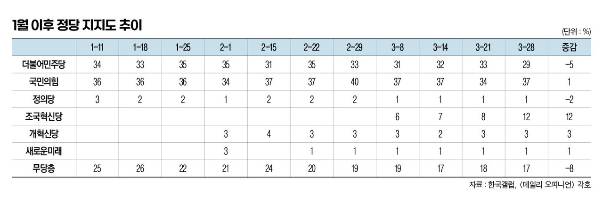
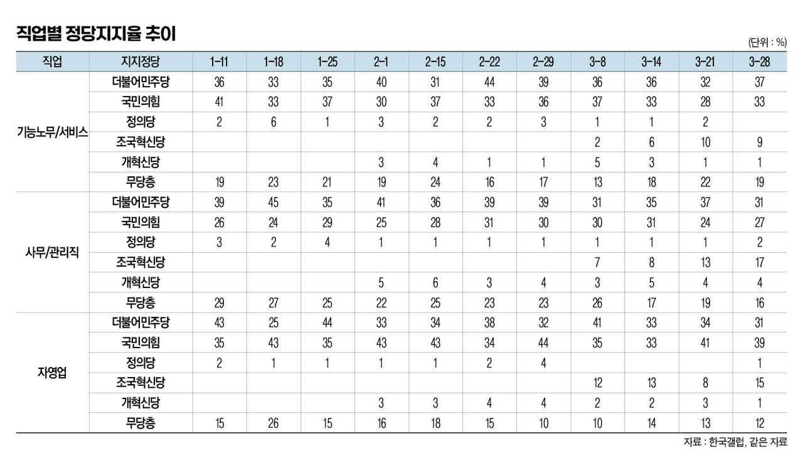
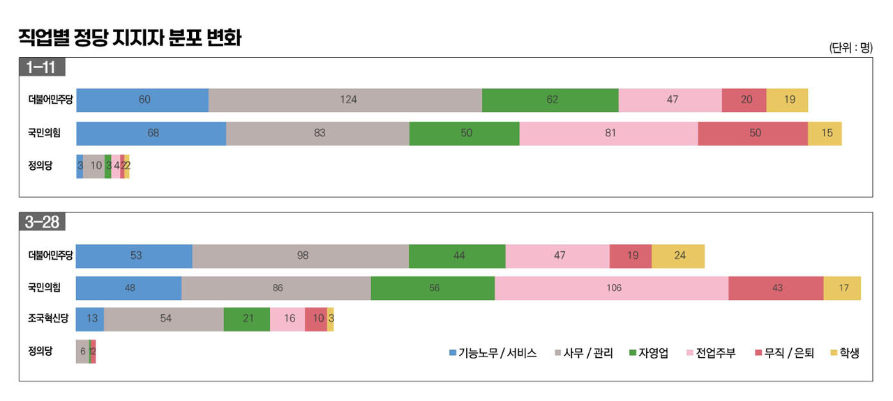

박영삼의 통계로 보는 노동
조국혁신당에 쏠린 화이트칼라, 국민의힘과 민주당은 핑크·블루칼라 포진
한국갤럽 조사 데이터 활용, 직업별 정당 지지도 분석 결과
22대 총선 막은 내렸고 정당들은 주권자들의 선택과 심판을 받았다. 이 글에서는 한국갤럽의 올해 1~3월 선거 여론조사 결과 중에서 직업별 정당 지지도를 살펴보기로 한다. 여론조사에서 정당 지지도 핵심 변수는 연령과 정치이념, 지역이다. 직업은 주요 변수는 아니지만 노동자집단이 어떤 투표 성향인지 파악하는 데 단초를 제공한다.
한국갤럽은 자동응답이 아닌 휴대전화를 이용한 조사원 면접방식으로 매주 전국 18세 이상 1천여명을 대상으로 정기 여론조사를 벌여 그 결과를 ’한국갤럽 데일리 오피니언’이라는 이름의 보고서로 발간한다.
선거 직전 최종 여론조사는 지난달 29일 나왔다. 그 조사에서의 정당 지지율은 더불어민주당 29%, 국민의힘 37%, 조국혁신당 12%, 개혁신당 3%, 녹색정의당 1%, 새로운미래 1%였다. 4.10 총선에서 정당 비례대표 지지율은 국민의미래 36.67%, 더불어민주연합 26.69%, 조국혁신당 24.25%, 개혁신당 3.61%. 녹색정의당 2.14%, 새로운미래 1.7%였다. 3월29일 갤럽의 정당지지도와 비교해 민주당 –2.31%, 국민의힘 -0.3%, 조국혁신당 +12.5%, 녹색정의당 +1.14% 차이가 난다.
기능노무·서비스직, 민주당과 국민의힘 사이 오락가락
그렇다면 총선 분위기가 본격화된 올해 1월 둘째주 이후 선거일 직전까지 직업별 정당 지지도추이는 어떠했을까. 노동자들의 표심 변화를 살펴보기 위해 취업자로 한정해서 직업별 정당지지도를 집중 살펴보기로 한다.
우선 성인 유권자 전체의 정당지지도는 민주당이 1월 초 34%에서 2월 중순 31%까지 떨어졌다가 다시 회복한 뒤 조국혁신당 등장 이후 29%로 5% 감소했고, 국민의힘은 36%에서 시작한 뒤 2월 말 40% 수준까지 올라갔으나 그 후 다시 하락해 37% 출발점으로 돌아왔다. 정의당은 3%에서 시작했으나 1%로 하락했고 개혁신당은 3% 수준을 유지했다. 조국혁신당은 출범 직후 6%에서 3월 말 12%까지 상승했다. 한편 무당층의 비율은 25%에서 17%로 감소했다.

이 기간 기능노무직, 서비스직 등 블루칼라와 핑크칼라 노동자들의 정당 지지율은 국민의힘이 다소 우위에 있는 구도에서 민주당이 우위에 있는 구도로 변화했다. 1월 초 기능노무·서비스직의 민주당 지지율은 33~36% 수준이었고 국민의힘 지지율은 33~41% 수준을 보였는데, 3월 말이 되면 민주당 37%, 국민의힘 33% 수준으로 뒤바뀐 형세를 보여준다. 한편 조국혁신당에 대한 지지는 10% 수준까지 상승하고 녹색정의당에 대한 지지는 2~6% 수준에서 0~2% 수준으로 하락한다.
민주당-정의당 텃밭은 사무관리직
화이트칼라에 해당하는 사무관리직의 경우 1월 초 민주당에 지지율은 35~45% 수준을 보이다가 3월 말이 되면 31% 수준까지 내려가고 국민의힘에 대한 지지율은 26% 수준에서 30%까지 상승하다 다시 27%로 되돌아온다. 대신 조국혁신당에 대한 지지율이 17%까지 상승하는 모습을 보이는데 직업군 중에서는 사무관리직이 조국혁신당 지지율 증가에 가장 크게 기여한 것으로 볼 수 있다.
한편 자영업자는 민주당과 국민의힘 사이를 왔다 갔다 하다가 3월 말에는 민주당 지지율은 줄고 국민의힘 지지율은 상승하면서 조국혁신당 지지율도 상승하는 모습을 보였다.

조국혁신당 지지율 끌어올린 ‘소득 중·상위층’
전체 유권자의 인구비례를 고려해서 정당별 지지자의 직업별 구성 분포를 살펴보면 민주당은 올해 초만 해도 국민의힘에 비해 기능노무직과 서비스직의 지지자 규모가 상대적으로 적었다. 그러나 선거가 가까워지면서 바뀐다. 3월 말 민주당 지지층은 기능노무직이 더 많아지고 오히려 사무관리직 비중은 줄어든다.
이는 조직혁신당의 등장에 대해 가장 적극적인 지지를 보낸 직업군이 사무관리직이라는 점을 반영한다. 소득별로도 소득상위층과 중상위층이 조국혁신당 지지율이 가장 높은 그룹이라는 점에서 일맥상통한다. 소득 중·상위층은 3월7일 처음으로 조국혁신당이 지지정당 후보에 올랐을 때 7% 지지율을 보인 뒤 같은달 28일에는 17%의 지지율로 급등했다. 소득하위층의 조국혁신당 지지율이 5%에서 출발한 뒤 8% 수준에 머문 것과는 차이가 있다.
결과적으로 이번 선거에서 가장 적극적으로 지지정당 선택의 변화를 보인 집단은 사무관리직이다. 이에 반해 기능노무직과 서비스직 노동자들은 기존의 국민의힘 지지층에서의 이탈은 있었지만 조국혁신당에는 그다지 적극적인 반응을 보이지는 않은 것으로 나타난다.
이번 총선 결과 원외정당 신세가 된 녹색정의당의 입장에서 보면 블루칼라 지지층을 상실하고 주력 지지층이었던 화이트칼라마저 조국혁신당에 내주는 결과에 직면해야 했다. 앞으로 진보정당의 정체성을 찾는데 고민거리가 하나 생겼다.

고려대 노동문제연구소 노동데이터센터장 (youngsampk@gmail.com)